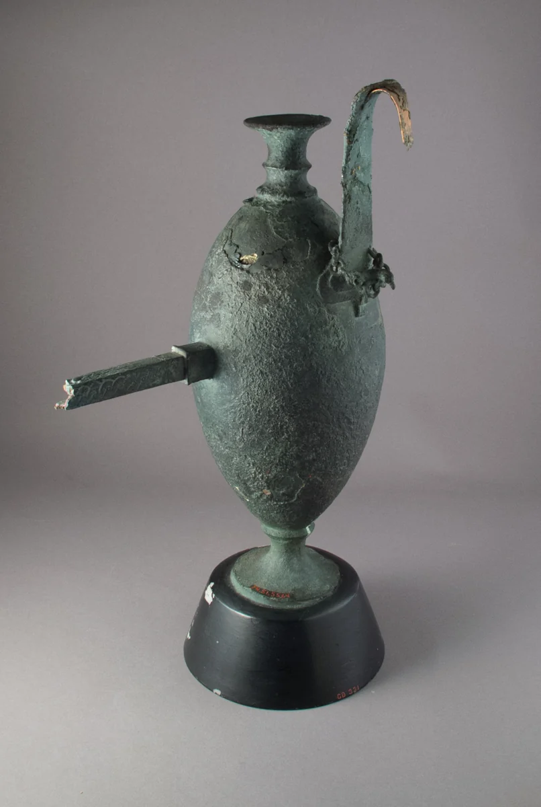
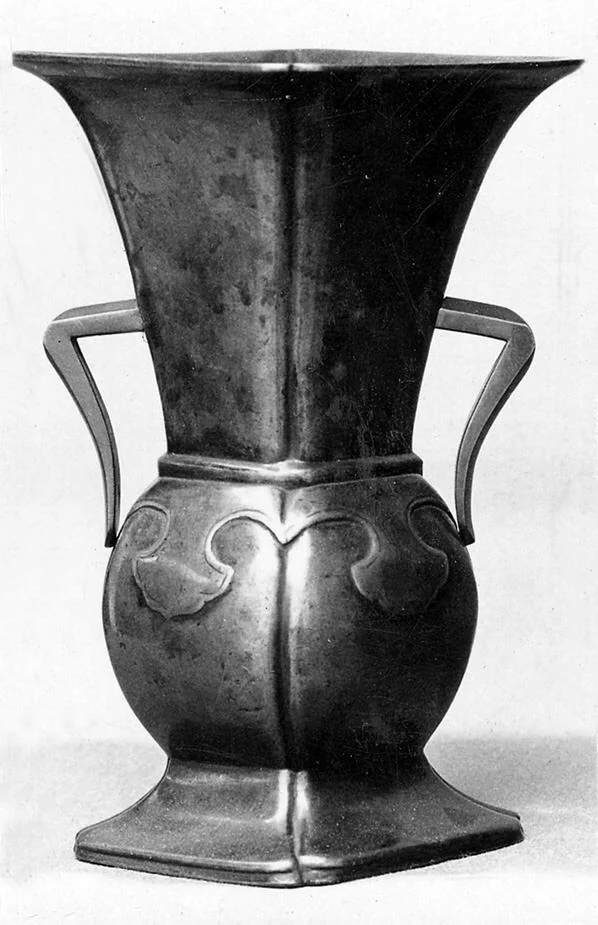

LOT 003Metalas
Bronzos tyla
Japonija · XVIII–XIX a.
Demo įvertis: 1 200–1 800 €
Loto istorija ↗Rudens kolekcija / 001
Trys objektai. Šimtmečiai istorijų.
Vienas žvilgsnis iš arčiau.

01 / Atrinkti objektai
Visi įverčiai ir statymai — demonstraciniai.
Muziejaus objektai neparduodami.
3 objektai
Japonija · XVIII–XIX a.
Demo įvertis: 1 200–1 800 €
Loto istorija ↗
Japonija · XIX a.
Demo įvertis: 800–1 200 €
Loto istorija ↗Kipras · VI a. pr. Kr.
Demo įvertis: 2 200–3 000 €
Loto istorija ↗Tokio derinio nėra. Pakeiskite filtrus.
02 / Peržiūros dienos
Demonstracinės 2026 metų lapkričio peržiūros. Vienas pasirinkimas, ramus pusvalandis.
Studijos pastabos
Tai išgalvoti mokomieji skaičiai. Jie neatspindi muziejaus objektų vertės, prieinamumo ar pardavimo.
Istoriniai objektai iš atviros muziejaus kolekcijos. Ši svetainė nėra muziejaus ar tikrų aukcionų paslauga. Duomenys niekam nesiunčiami.